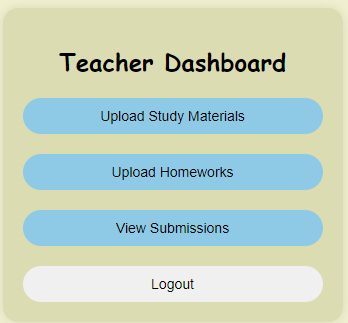

Your Ultimate Companion for Learning and Mastery
Studymate is a website when the teacher and the student can mastery skills and achieve goals. In this first version we make it simple so the teacher can send study materials and homeworks and the students get educated.
Feature one: Get the job done.
As a student, you now have the convenience of accessing all your study materials from anywhere, at any time, whether you're at home, on the go, or in the library. Plus, submitting your homework assignments has never been easier, allowing you to stay organized and on top of your academic responsibilities no matter where life takes you..
Feature two:
Teachers, you no longer need to worry about losing valuable class time because students are still busy writing. Now, with the ability to easily upload study materials and homework assignments in advance, you can streamline the entire process. This gives you more time to focus on what truly matters—explaining and discussing the subjects in class, engaging with your students, and fostering a deeper understanding of the material
As we all remember, just a few years ago, the world was struck by a devastating pandemic. In our own countries, universities and educational centers were forced to close, leaving countless students struggling to continue their education. For many, especially those from disadvantaged backgrounds, the lack of a stable internet connection became a heartbreaking barrier, causing them to fall behind or even fail. It was during this difficult time that the idea was born—to create a solution that would ensure all students, no matter their circumstances, could access their study materials and homework from a single, reliable platform. We also wanted to make it easier for students to submit their assignments to teachers, so that no one would be left behind again..
StudyMateMeet the dedicated team members who created StudyMate.
ABDELKADER BELKACEMI
LINKEDIN GITHUBAustin Ng'ang'a
LINKEDIN GITHUB